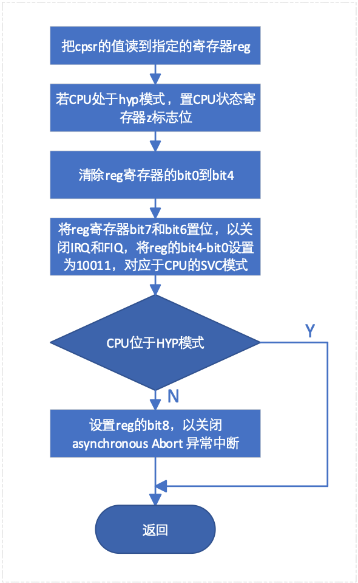
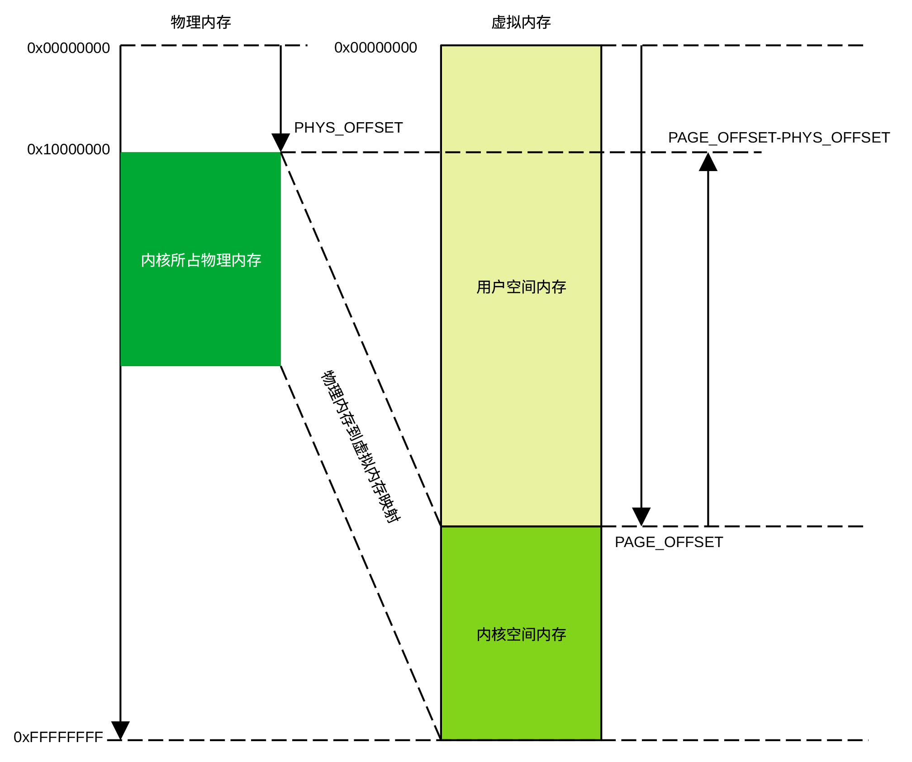
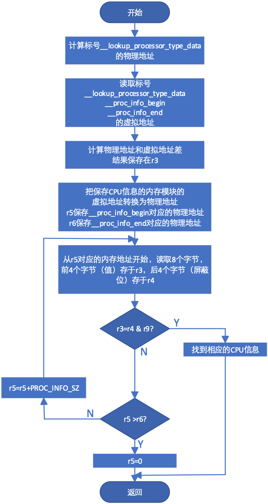

设置CPU模式
在head.S文件中有一条__HEAD的宏，其作用是告诉链接程序把后续代码放在.head.text段，该段的初始地址就是Linux内核的程序入口地址，即内核程序要执行的第一条指令的地址。去掉与arm无关、为了支持Thumb（在contex-M运行的Linux内核工作于thumb状态）和BE8指令而定义的宏（当编译开关选择为支持arm时，这些宏的编译结果为空），以及为了支持40位地址空间（通过编译开关选择，事实上，arm-v7A支持40位地址，为了简洁，我们省略了该部分代码）而使用的代码后，该段程序可简化为：
.arm
__HEAD
ENTRY(stext)
safe_svcmode_maskall r9
mrc p15, 0, r9, c0, c0 @ 获取cpu id
bl __lookup_processor_type @ r5=procinfo r9=cpu id
ovs r10, r5 @ invalid processor (r5=0)?
beq __error_p
adr r3, 2f
ldmia r3, {r4, r8}
sub r4, r3, r4 @ (PHYS_OFFSET - PAGE_OFFSET)
add r8, r8, r4 @ PHYS_OFFSET
bl __vet_atags
#ifdef CONFIG_ARM_PATCH_PHYS_VIRT
bl __fixup_pv_table
#endif
bl __create_page_tables
ldr r13, =__mmap_switched @ address to jump to after mmu has been enabled
badr lr, 1f @ return (PIC) address
mov r8, r4 @ set TTBR1 to swapper_pg_dir
ldr r12, [r10, #PROCINFO_INITFUNC]
add r12, r12, r10
ret r12
1: b __enable_mmu
ENDPROC(stext)
.ltorg
2: .long .
.long PAGE_OFFSET
其中代码段：
safe_svcmode_maskall r9
mrc p15, 0, r9, c0, c0
bl __lookup_processor_type
movs r10, r5
beq __error_p
的作用是确保CPU处于SVC模式，关闭所有中断，确定CPU类型。safe_svcmode_maskall为宏定义了一段设置CPU模式及屏蔽中断的宏，r9为传递给该宏的工作寄存器。这段代码的工作流程为：

图 6‑1 设置SVC模式及关中断流程
指令mrc p15, 0, r9, c0, c0从协处理器读取寄存器C0的值，存放在寄存器r9中，协处理器的寄存器C0保存了CPU id的值。
__lookup_processor_type为用于查找cpu类型的子程序，该子程序使用了PAGE_OFFSET和PHYS_OFFSET两个常量。要了解这两个常量的含义，需要了解虚拟地址、物理地址、内核空间和用户空间（也称作内核态和用户态）的概念。下面我们简单地介绍这些概念的含义。
不同的CPU或系统设计，内存的起始地址和大小不同。Linux支持大量不同类别的CPU和系统，代码大部分都是用c语言编写。如果在编写这些代码时使用实际的内存地址，代码会非常复杂，程序的可扩展性很差。为此，Linux假定所有系统内存的起始地址均为0x00000000，结束地址为0xFFFFFFFF，这个假设的地址就是虚拟地址。当系统需要访问内存时，由内存管理模块把虚拟地址转换为实际的物理地址，也就是说，CPU的地址空间为虚拟地址空间，内存占用的地址空间为物理地址空间。
Linux把0x00000000-0xFFFFFFFF的虚拟内存地址划分为内核空间和用户空间，用户程序位于用户空间且只能访问用户空间，内核程序位于内核空间。Linux使用了四种内存划分方式，当编译开关为VMSPLIT_1G时，内核空间为0x40000000-0xFFFFFFFF，当编译开关为VMSPLIT_2G时，内核空间为0x80000000-0xFFFFFFFF， 当编译开关为VMSPLIT_3G_OPT时，内核空间为0xB0000000=0xFFFFFFFF，而当编译开关为VMSPLIT_3G时，内核空间为0xC0000000-0xFFFFFFFF。编译开关有多种设置方法，对arm而言，一种设置方法是在git/arch/arm/configs/*_defconfig文件中利用类似于CONFIG_VMSPLIT_1G=y的语句设置。
PHYS_OFFSET是内存在物理地址空间的起始地址，即内存的起始物理地址，PAGE_OFFSET是内核空间的起始虚拟地址。虚拟地址、物理地址、内核空间、用户空间、PHYS_OFFSET和PAGE_OFFSET之间的关系可以用下图表示。

图 6‑2 Linux地址空间
在介绍了虚拟地址和物理地址等基本概念后，接着介绍基于arm的Linux查找CPU类型的子程序。该子程序的代码为：
__lookup_processor_type:
adr r3, __lookup_processor_type_data
ldmia r3, {r4 - r6}
sub r3, r3, r4 @ get offset between virt&phys
add r5, r5, r3 @ convert virt addresses to
add r6, r6, r3 @ physical address space
1: ldmia r5, {r3, r4} @ value, mask
and r4, r4, r9 @ mask wanted bits
teq r3, r4
beq 2f
add r5, r5, #PROC_INFO_SZ @ sizeof(proc_info_list)
cmp r5, r6
blo 1b
mov r5, #0 @ unknown processor
2: ret lr
ENDPROC(__lookup_processor_type)
.align 2
.type __lookup_processor_type_data, %object
__lookup_processor_type_data:
.long .
.long __proc_info_begin
.long __proc_info_end
.size __lookup_processor_type_data, . - __lookup_processor_type_data
程序执行后， r9存储CPU id，r5存储指向cpu信息存储位置的物理地址。我们先看代码最后的汇报指令：
__lookup_processor_type_data:
.long .
.long __proc_info_begin
.long __proc_info_end
.size __lookup_processor_type_data, . - __lookup_processor_type_data
.long
.的作用是在标号__lookup_processor_type_data地址处存储标号自己的虚拟地址，后面两条汇编指令的作用是把标号__proc_info_begin和__proc_info_end的地址保存在标号__lookup_processor_type_data后面的两个内存单元。
在__proc_info_begin和__proc_info_end之间的内存区域保存了Linux支持的各种CPU的信息。其中标号__proc_info_begin和__proc_info_end在编译过程中生成，为虚拟地址。
CPU信息保存在虚拟地址__proc_info_begin和__proc_info_end之间，由于内存管理模块还没有开始工作，要访问CPU信息，首先必须把虚拟地址转换为物理地址。
子程序的第一条指令的作用是计算__lookup_processor_type_data的物理地址（程序计数器值加偏移量__lookup_processor_type_data），保存在r3寄存器，然后以r3为基地址，把标号地址__lookup_processor_type_data 、__proc_info_begin和__proc_info_end分别读入寄存器r4、r5和r6中。
指令sub r3, r3, r4计算标号__lookup_processor_type_data物理地址和虚拟地址之间的差，利用该差值可以把虚拟地址转换为物理地址（见图 37(#Ref138052453)）。指令 add r5, r5, r3和add r6, r6, r3分别把虚拟地址__proc_info_begin和__proc_info_end转换为物理地址。后续代码从内存读取CPU信息并与保存在r9的、从CPU协处理器(CP15)读取的CPU id进行比较。若相同，则r5内容为CPU信息的物理地址，程序返回。如在__proc_info_begin和__proc_info_end之间的内存模块中找不到相应的CPU id，则r5内容置0，程序返回。下图给出了查找CPU信息的子程序流程。

图 6‑3 CPU信息查找流程
在从CPU信息查找子程序返回后，程序接着计算物理地址和虚拟地址的差（PHYS_OFFSET-PAGE_OFFSET）及内存的起始物理地址，然后调用__vet_atags子程序检查U-BOOT传递给Linux的参数是否合法。
U-BOOT传递给Linux的参数有两种形式。如果Linux支持设备树，则U-BOOT通过把扁平化设备树的首地址存于寄存器r2的方式传递参数给Linux，如果Linux不支持设备树，则U-BOOT通过把把参数列表地址存于寄存器r2的方式把参数传递给Linux。通常，U-BOOT把参数列表或DTB放在内存最开始的16kB内，U-BOOT解压程序或Linux程序均不能够覆盖这一段内存。
如果Linux支持设备树，则检查r2寄存器指向的内存单元的值是否为设备树魔术字。如果该单元的值等于魔术字，则r2指向的为合法的DTB文件，否则为非法文件。当系统采用小端表示方式时，魔术字为0xEDFE0DD0，当系统采用大端表示方式时，魔术字为0xD00DFEED。
如果Linux不支持设备树，则先检查r2寄存器指向的内存单元4个字节的值是否为0x0005（ATAG_CORE_SIZE）或0x0002（空ATAG_CORE）。若不是，则该地址存放的不是合法的atag列表，若是其中的任一个，则继续检查后续8个字节的值是否等于ATAG_CORE（0x54410001）。若等于，则寄存器r2存放的是合法的atag列表地址，若不等于，则r2存放的不是合法的atag列表地址。
当r2存放的不是合法的DTB地址或atag列表地址时，在返回调用程序之前，要把寄存器r2的值清零，通知调用程序地址非法。
子程序__vet_atags的代码为：
__vet_atags:
tst r2, #0x3 @ aligned?
bne 1f
ldr r5, [r2, #0]
#ifdef CONFIG_OF_FLATTREE
ldr r6, =OF_DT_MAGIC @ is it a DTB?
cmp r5, r6
beq 2f
#endif
cmp r5, #ATAG_CORE_SIZE @ is first tag ATAG_CORE?
cmpne r5, \#ATAG_CORE_SIZE_EMPTY
bne 1f
ldr r5, [r2, #4]
ldr r6, =ATAG_CORE
cmp r5, r6
bne 1f
2: ret lr @ atag/dtb pointer is ok
1: mov r2, #0
ret lr
ENDPROC(__vet_atags)
这段代码结构比较简单，这里没有给出详细的流程图。